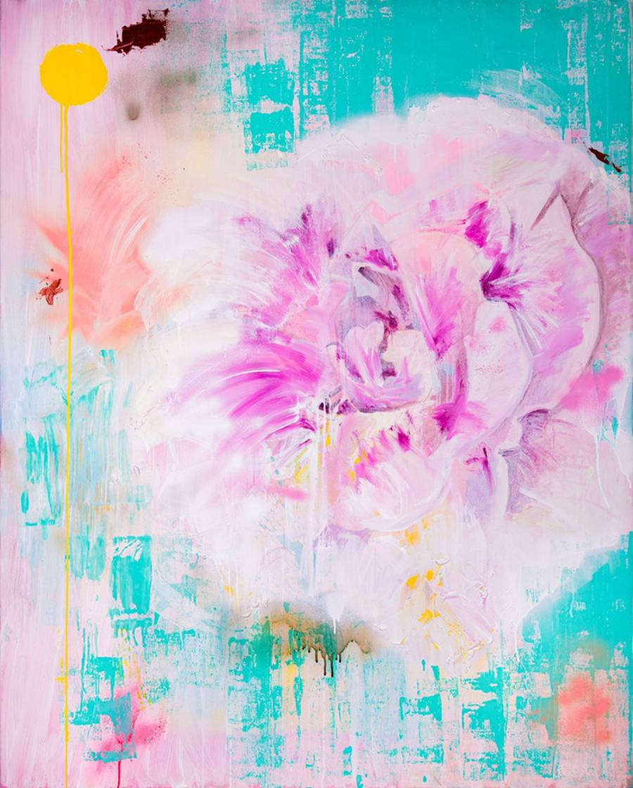
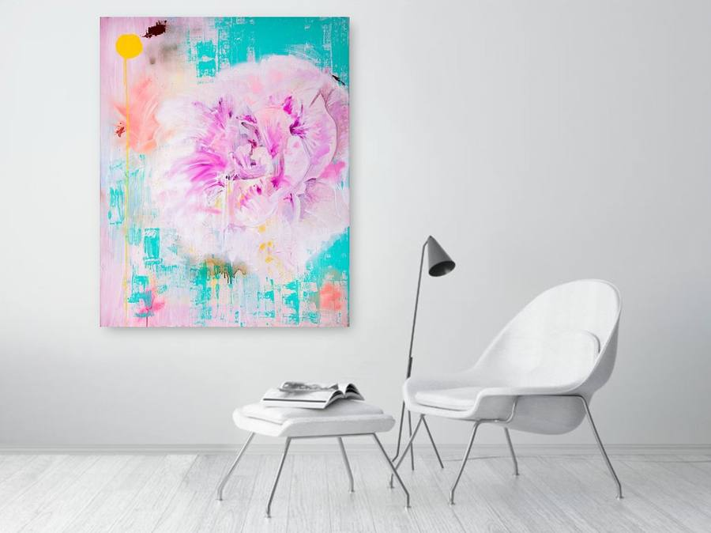

Edition printed at bespoke size (762 × 948 mm) — differs from original artwork shown in collector's home
Mousumi Saha — Joyspace (1)
Fine art giclée print · Edition of 100
£650
- Format
- White tray frame with D-rings and cord for hanging
£350
- Format
- Unframed print only, rolled in protective tube
- Size
- 762 × 948 mm
- Paper
- Hahnemühle Photo Rag 310gsm
- Giclée archival pigment inks
- Certificate
- Certificate of authenticity included
- Dispatch
- Tracked, 5–7 working days (UK)
- Shipping
- Calculated at checkout
Produced to order. No returns on fine art prints unless damaged in transit.